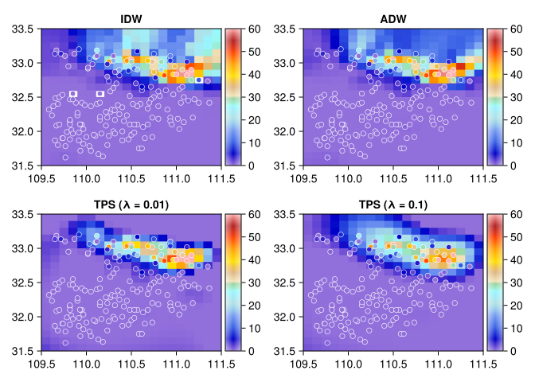
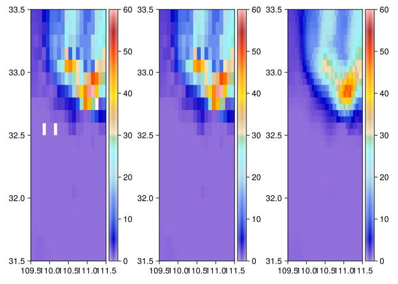
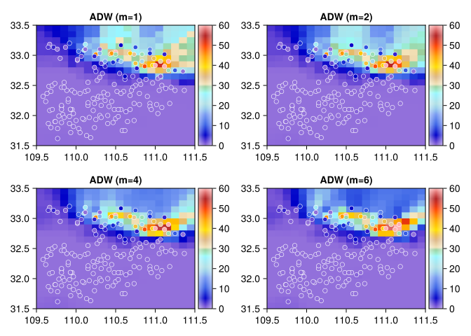
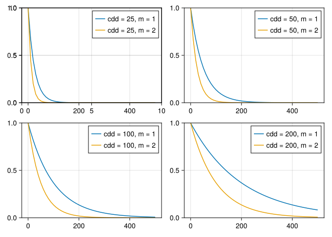

using SpatRasters
using MakieLayers, CairoMakie
import MakieLayers: imagesc, imagesc!
function imagesc(ra::SpatRaster, args...; kw...)
lon, lat = st_dims(ra)
imagesc(lon, lat, ra.A, args...; kw...)
end
function imagesc!(handle, ra::SpatRaster, args...; kw...)
lon, lat = st_dims(ra)
imagesc!(handle, lon, lat, ra.A, args...; kw...)
end
function plot_interp(fig, ra, X, Y; colors=amwg256, colorrange=(0, 60), title="IDW")
ax, plt = imagesc!(fig, ra[:, :, 1]; colorrange, colors, title, force_show_legend=true)
scatter!(ax, X[:, 1], X[:, 2]; color=Y, strokecolor=:white, strokewidth=0.6, colorrange, colormap=colors)
end5. Spatial Interpolations
Load packages
Interp
using SpatRasters, Statistics, Test
using RTableTools
indir = "$(@__DIR__)/../.." |> abspath
d = fread("$indir/data/prcp_st174_shiyan.csv")
X = [d.lon d.lat] # d.alt
Y = d.prcp
# Y = repeat(y, outer=(1, 24 * 30))174-element Vector{Float64}:
0.5
0.0
0.0
0.0
0.0
0.0
0.0
0.0
0.0
0.0
0.0
0.0
0.0
⋮
0.0
0.0
0.0
0.0
0.0
0.0
0.5
10.0
0.0
0.0
0.0
0.0b = bbox(109.5, 31.5, 112 - 0.5, 33.5)
target = make_rast(; b, cellsize=0.1)
# neighbor = find_neighbor(target, X; radius=100, do_angle=true)
radius = 100
nmax = 6
@time ra_idw = interp(X, Y, target; method="idw", radius, nmax, m=2)
@time ra_adw = interp(X, Y, target; method="adw", radius, cdd=25, nmax, do_angle=true, m=6)
@time ra_tps1 = interp_tps(X, Y, target; λ=0.01)
@time ra_tps2 = interp_tps(X, Y, target; λ=0.1)
# @profview ra_adw = interp(X, Y, target; wfun=weight_adw!)Progress: 10%|████▏ | ETA: 0:00:01 Progress: 100%|█████████████████████████████████████████| Time: 0:00:00
4.292072 seconds (8.20 M allocations: 406.708 MiB, 9.32% gc time, 99.83% compilation time) 0.431392 seconds (864.29 k allocations: 38.664 MiB, 97.59% compilation time) 3.479314 seconds (10.19 M allocations: 513.521 MiB, 3.52% gc time, 99.87% compilation time) 0.003877 seconds (242 allocations: 2.029 MiB)
SpatRaster{Float64}: Raster A : Array{Float64, 3} | (20, 20, 1) | 0.0 Mb b : bbox(109.5, 31.5, 111.5, 33.5) cellsize : (0.1, -0.1) lon, lat : 109.55:0.1:111.45, 33.45:-0.1:31.55 time : nothing bands : nothing nodata : nothing
fig = Figure(; size=(1000, 800))
plot_interp(fig[1, 1], ra_idw, X, Y; title="IDW")
plot_interp(fig[1, 2], ra_adw, X, Y; title="ADW")
plot_interp(fig[2, 1], ra_tps1, X, Y; title="TPS (λ = 0.01)")
plot_interp(fig[2, 2], ra_tps2, X, Y; title="TPS (λ = 0.1)")
fig┌ Warning: Found `resolution` in the theme when creating a `Scene`. The `resolution` keyword for `Scene`s and `Figure`s has been deprecated. Use `Figure(; size = ...` or `Scene(; size = ...)` instead, which better reflects that this is a unitless size and not a pixel resolution. The key could also come from `set_theme!` calls or related theming functions. └ @ Makie ~/.julia/packages/Makie/4JW9B/src/scenes.jl:264

target_high = make_rast(; b, cellsize=0.05)
ra = ra_idw
ra_high = interp(ra, target_high; method="nearest")
ra_high_adw = interp(ra, target_high; method="adw", nmax=6)
@show size(ra)
@show size(ra_high)
colorrange = (0, 60)
fig = Figure(; size=(800, 400))
imagesc!(fig[1, 1], ra; colorrange, title="LOW resolution")
imagesc!(fig[1, 2], ra_high; colorrange, title="HIGH nearest")
imagesc!(fig[1, 3], ra_high_adw; colorrange, title="HIGH adw")
figsize(ra) = (20, 20, 1) size(ra_high) = (40, 40, 1)
┌ Warning: Found `resolution` in the theme when creating a `Scene`. The `resolution` keyword for `Scene`s and `Figure`s has been deprecated. Use `Figure(; size = ...` or `Scene(; size = ...)` instead, which better reflects that this is a unitless size and not a pixel resolution. The key could also come from `set_theme!` calls or related theming functions. └ @ Makie ~/.julia/packages/Makie/4JW9B/src/scenes.jl:264

ADW m如何选择
function k2ij(k; nrow=2)
i = ceil(Int, k / nrow)
j = k - (i - 1) * nrow
i, j
end
fig = Figure(; size=(1000, 700))
for (k, m) in enumerate([1, 2, 4, 6])
i, j = k2ij(k; nrow=2)
@time ra_adw = interp(X, Y, target; method="adw", radius, cdd=25, nmax=8, do_angle=true, m)
plot_interp(fig[i, j], ra_adw, X, Y; title="ADW (m=$m)")
end
fig0.013608 seconds (313.79 k allocations: 6.518 MiB)
┌ Warning: Found `resolution` in the theme when creating a `Scene`. The `resolution` keyword for `Scene`s and `Figure`s has been deprecated. Use `Figure(; size = ...` or `Scene(; size = ...)` instead, which better reflects that this is a unitless size and not a pixel resolution. The key could also come from `set_theme!` calls or related theming functions. └ @ Makie ~/.julia/packages/Makie/4JW9B/src/scenes.jl:264
0.013417 seconds (314.05 k allocations: 6.536 MiB) 0.015317 seconds (313.79 k allocations: 6.517 MiB) 0.013461 seconds (313.79 k allocations: 6.517 MiB) 
ADW cdd如何选择?
m = 1时，cdd是权重降到0.6对应的距离
dist = 0:10:500.0
cal_weight(dist; cdd=100, m=1) = exp(-dist / cdd)^m
function plot_ws!(ax; m, cdd)
ws = cal_weight.(dist; m, cdd)
lines!(ax, dist, ws; label="cdd = $cdd, m = $m")
end
fig = Figure(; size=(800, 600))
ax = Axis(fig[1, 1])
for (k, cdd) = enumerate([25, 50, 100, 200])
i, j = k2ij(k; nrow=2)
ax = Axis(fig[i, j])
ylims!(ax, (0, 1))
for (j, m) = enumerate([1, 2])
plot_ws!(ax; m, cdd)
end
axislegend()
end
# vlines!(ax, [cdd]; linestyle=:dash, color=:red)
# lines!(ax, [0, cdd], [1, 1] * cal_weight(cdd); linestyle=:dash, color=:red)
# lines!(ax, [1, 1] .* cdd, [0, 1] * cal_weight(cdd); linestyle=:dash, color=:red)
fig┌ Warning: Found `resolution` in the theme when creating a `Scene`. The `resolution` keyword for `Scene`s and `Figure`s has been deprecated. Use `Figure(; size = ...` or `Scene(; size = ...)` instead, which better reflects that this is a unitless size and not a pixel resolution. The key could also come from `set_theme!` calls or related theming functions. └ @ Makie ~/.julia/packages/Makie/4JW9B/src/scenes.jl:264
